Sensor-first geometry
The front scanner was positioned with an unobstructed view and a defined rotational axis.
Robotics, final-year project
A purpose-built differential-drive robot developed around the mechanical, sensing, electronics and host-software requirements of a low-cost indoor Time-of-Flight SLAM system.
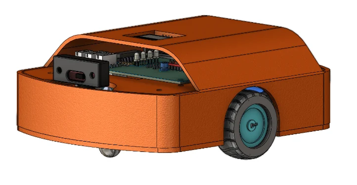
I chose not to adapt an existing robot model because the mechanical platform was part of the engineering problem. A generic chassis would have fixed the wheelbase, sensor position and internal volume before the sensing and electronics architecture had been resolved.
Designing the platform from the component level allowed the scanner field of view, drive geometry, battery position, PCB envelope, cable paths and service access to be developed together. It also created a controlled mechanical reference for encoder-based motion and repeatable ToF scanning.
“A generic mobile base fixes wheel geometry and sensor placement before sensing physics are resolved. Designing from scratch allowed the scanner field of view, drive kinematics, and PCB packaging to be developed together.”
The front scanner was positioned with an unobstructed view and a defined rotational axis.
The wheel, motor and caster positions were set as one differential-drive package.
PCB, battery and interfaces were packaged into the chassis instead of added after it.
Layered plates and a separate shell keep internal parts reachable during assembly and iteration.
The chassis was developed against practical system requirements rather than appearance alone.
Keep the full sensing and drive system within a manageable indoor footprint.
Retain access to the PCB, battery, motors, scanner and connectors.
Provide fixed sensor and wheel relationships for mapping and odometry.
Leave defined interfaces for sensors, display and later PCB development.
Each model addresses a mounting, alignment, protection or motion requirement. Supplier components were coordinated with custom geometry inside the top-level assembly.
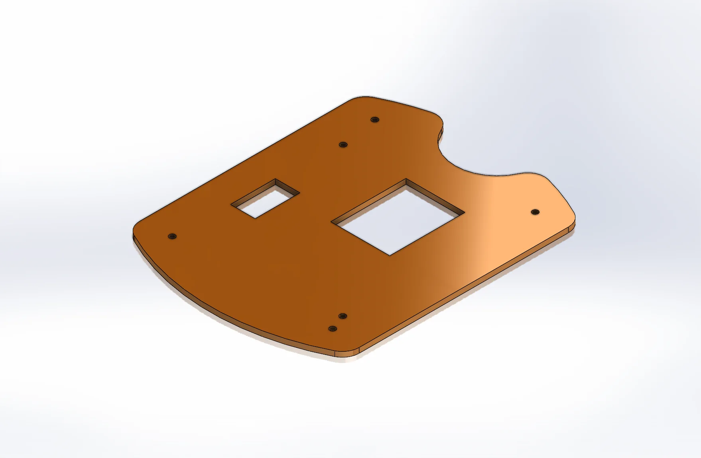
Upper mounting plane for electronics, battery access and the scanning assembly.
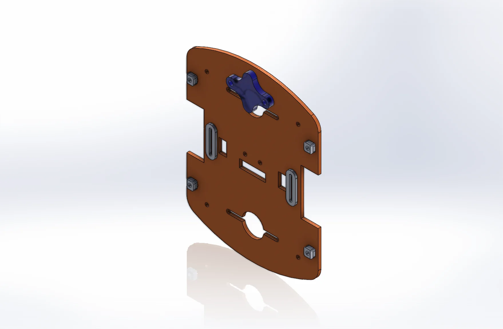
Primary structural plate locating the drive system, supports and lower mounting features.
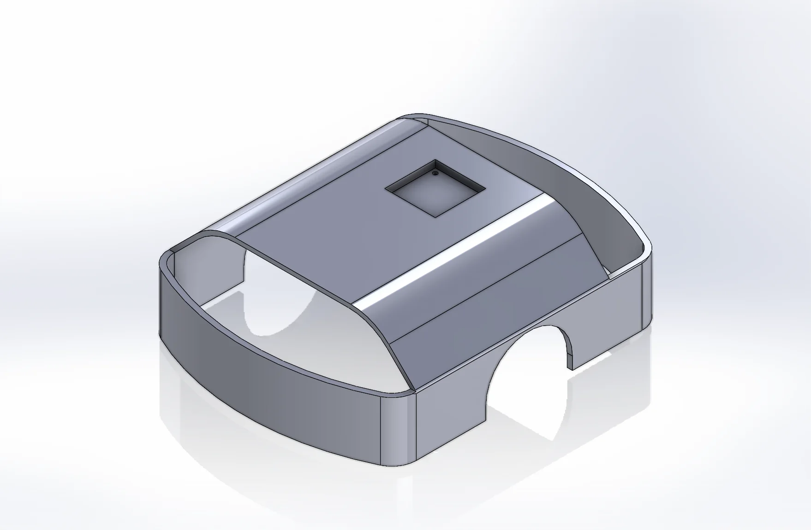
Protective enclosure formed around the completed internal package and wheel clearances.
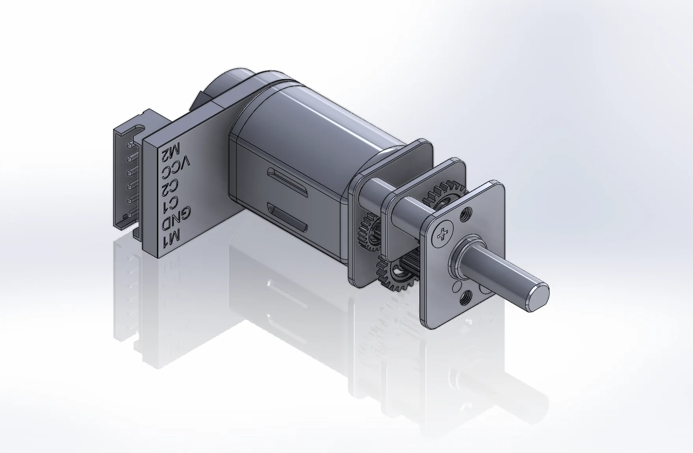
N20 DC geared motor with encoder interface used for differential-drive motion and wheel odometry.

Purpose-built board integrating power conversion, motor control, stepper drive and sensor connections.
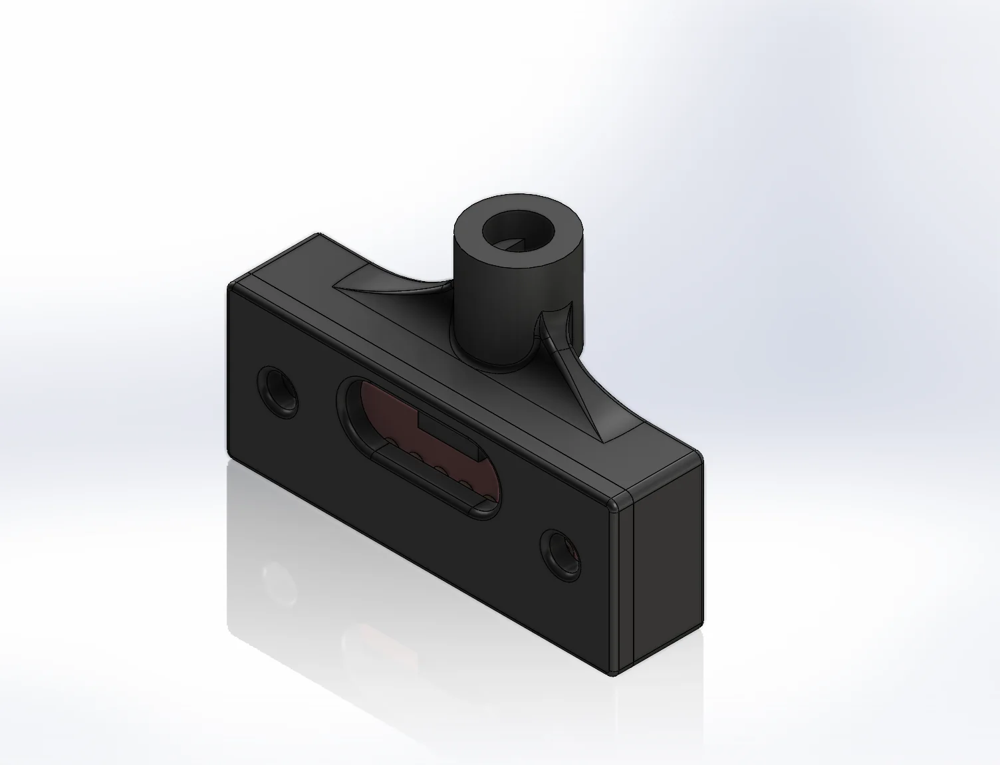
Locates and protects the VL53L8CX while mounting it on the repeatable scanning axis.
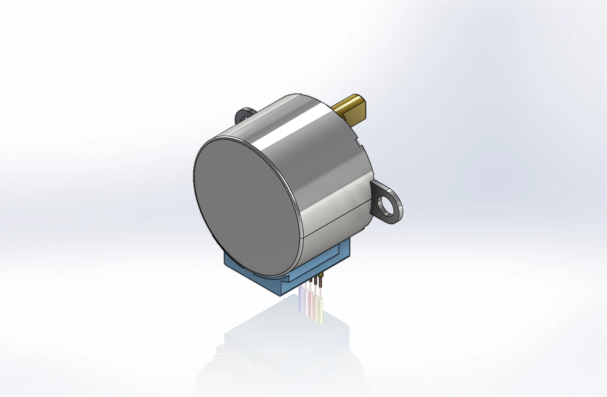
28BYJ-48 actuator rotating the sensor through controlled angular increments during a scan.
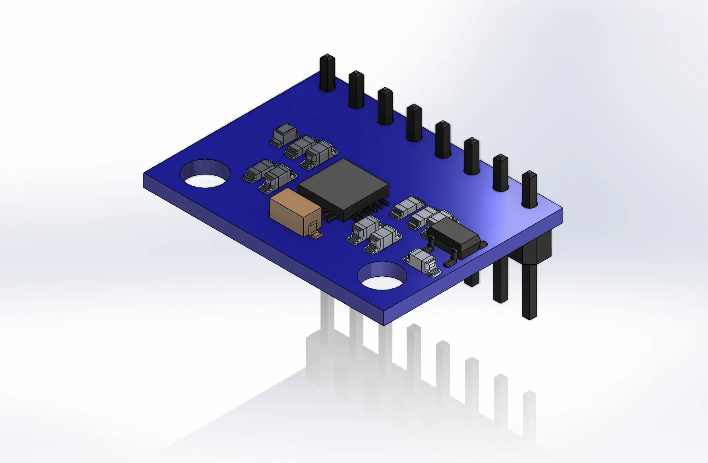
MPU6050 inertial sensor providing motion and orientation measurements for the robot system.
The open assembly was used to check the real occupied volume, mounting relationships and access before the housing was fitted.
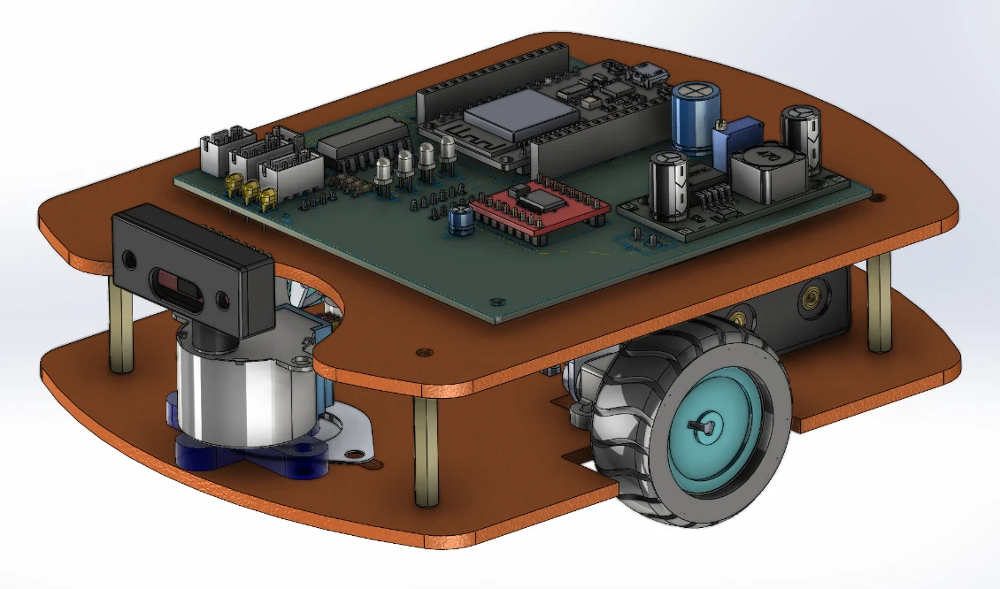
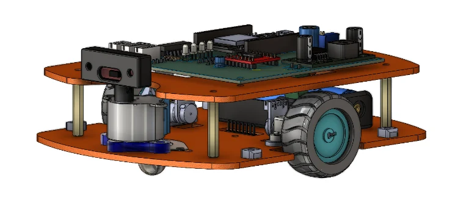
The battery was positioned centrally over the drive axis to support traction and reduce the chance of wheel slip affecting odometry. Electronics and sensing hardware were placed on the upper deck, keeping the drive package below and simplifying access during development.
The VL53L8CX has a limited field of view, so it was mounted on a 28BYJ-48 stepper-driven scanner. The stepper provided repeatable angular increments, while a homing sensor established a consistent zero reference after startup.
The drawing set communicates fabrication dimensions, mounting positions and the relationship between the mechanical subsystems. Each preview opens the full PDF.
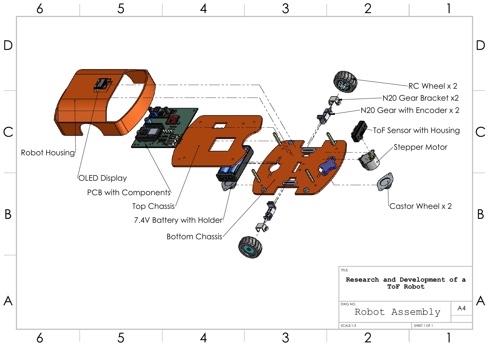
The robot was developed as a distributed system. The ESP32 handles time-critical hardware tasks, a Python GUI provides the operator interface, and MATLAB converts timestamped motion and range data into the live SLAM map.
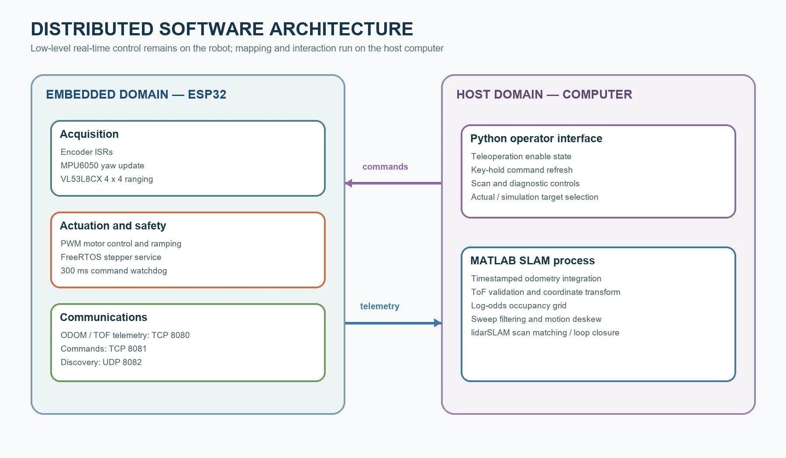
The software was separated by responsibility so that motor safety and sensor timing remain on the robot while heavier mapping and simulation tasks run on the computer.
The ESP32 reads wheel encoders, the MPU6050 and the scanning VL53L8CX, then forms timestamped odometry and range packets. The Python interface selects either the physical robot or the MATLAB simulation, sends motion and scan commands, and exposes encoder, IMU and ToF diagnostics during development.
For physical operation, MATLAB receives the robot telemetry, reconstructs motion from cumulative encoder ticks and IMU yaw, aligns each ToF measurement with its acquisition pose, and updates the occupancy map and SLAM estimate. The same control vocabulary is accepted by the MATLAB software-in-the-loop simulator, allowing the command and mapping workflow to be checked before operating the hardware.
Control, TCP 8081
Drive, stop, reset, scan and diagnostic commands for the physical robot.
Telemetry, TCP 8080
Timestamped encoder, yaw, scan angle and ToF distance records.
Simulation, TCP 8091
The same operator controls target the simulated robot through localhost.
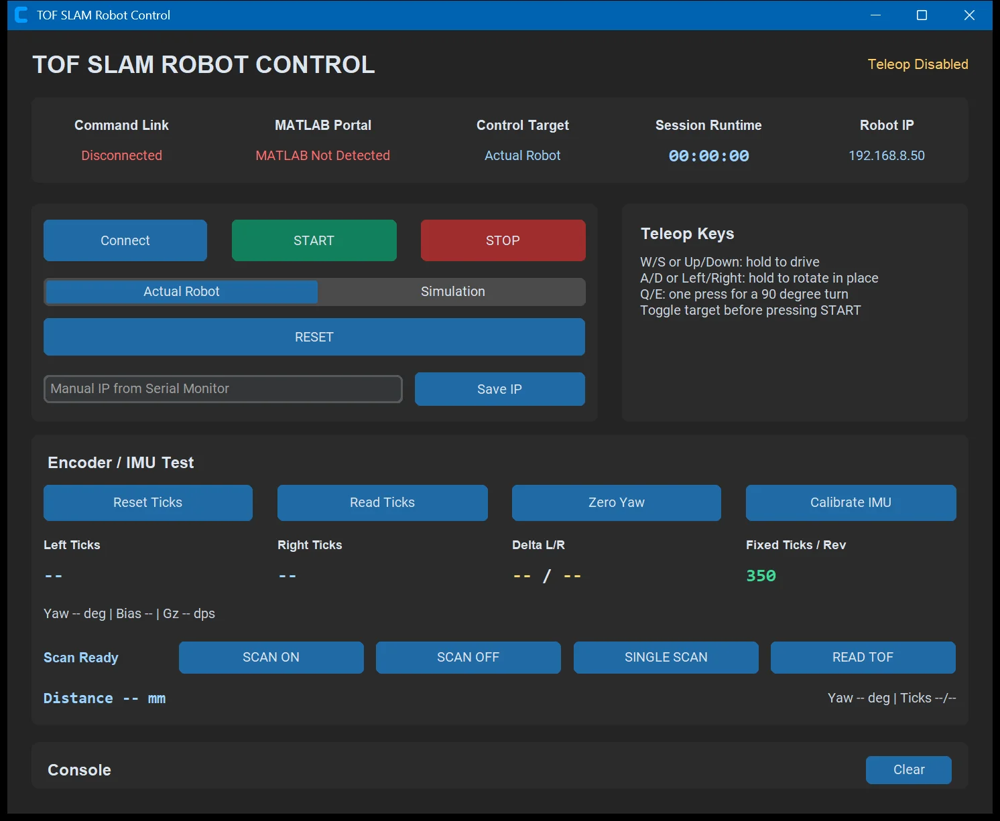
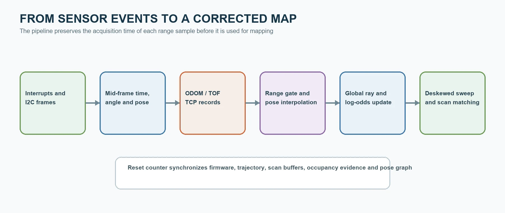
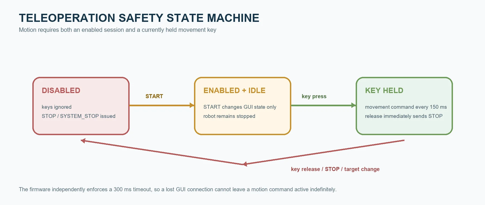
The implemented two-layer PCB consolidated the working robot hardware. The later four-layer design explored a more integrated ESP32 architecture with dedicated power and ground planes.
ESP32 development module, power conversion, motor and stepper control, sensor headers, indicators and test points on a 100 × 100 mm two-layer board.
Open layouts, components and BOM
A production-oriented design proposal using an ESP32-WROOM-32, USB-C programming, onboard regulation and separate signal, power and ground layers.
Open layers, components and BOM